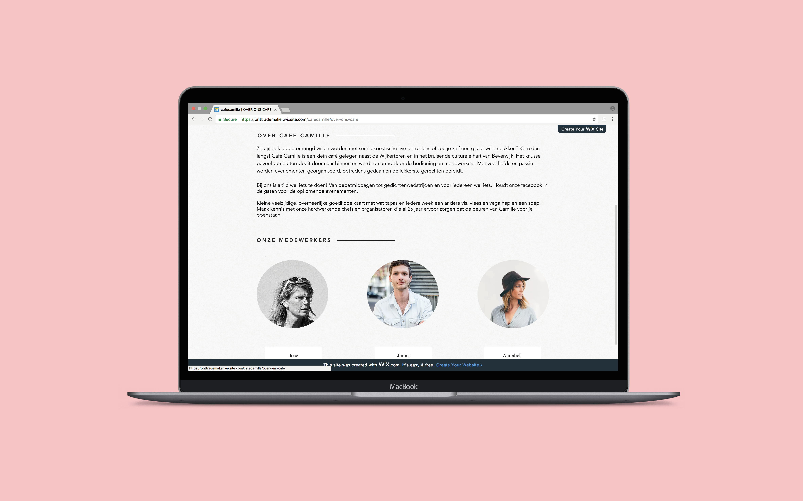
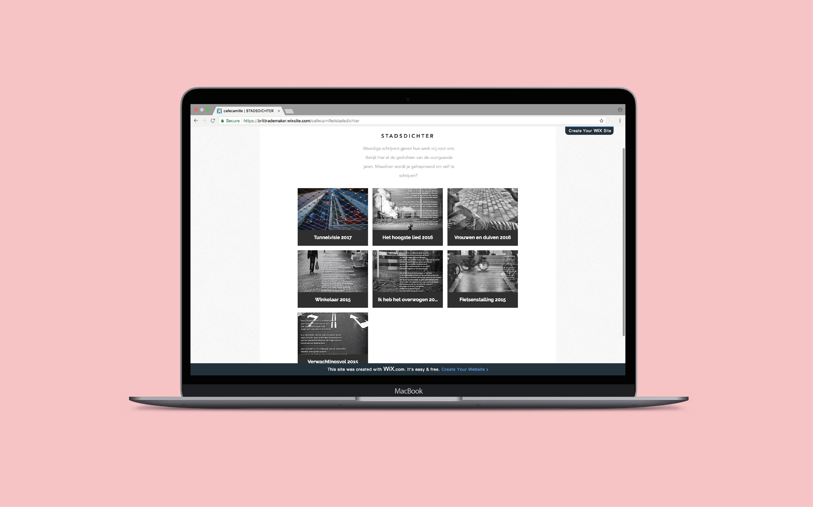

CAFÉ CAMILLE
Wix, indesign
Text in Context mei 2017
De opdracht
Ik vond text in context een uitdagende opdracht. Ik ben zelf niet erg goed in het schrijven van teksten. Ik doe er meestal erg lang over om een tekst te schrijven omdat ik probeer zo veel mogelijk te letten op mijn spelling en grammatica. Wat ik wel erg leuk vond was om me in te leven in Camille, het restaurant waarvan ik de website wilde herschrijven. Ik vond dat hierin mijn kracht van inlevingsvermogen naar voren kwam. Ik heb een tekst kunnen schrijven die past bij de tone of voice van Camille. Om de website te laten zien hebben we een wixsite in elkaar gezet. Hiervan heb ik je vormgeving bedacht en de tekst van de about page geschreven.
Het eindresultaat
Ik heb geleerd om me in te leven in een bedrijf om zo een tekst te kunnen schrijven in de Tone of Voice van het bedrijf. Wat ik de volgende keer anders ga doen is eerst samen met het team de Tone of Voice bepalen omdat we nu nog dingen aan moesten passen omdat niet alles op elkaar aansloot omdat iedereen een andere manier van schrijven had.
Bekijk de website



